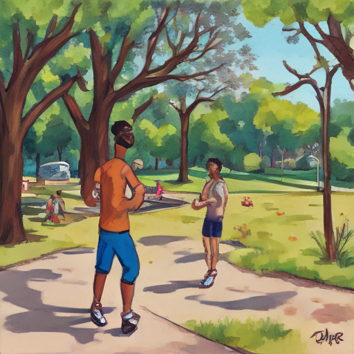

Today, I woke up to find Stephen Hubbard had posted an article about LeBron James' new venture. It was a perfect day for introspection, so I decided to start my morning jog around the neighborhood park. As I ran past the grownups playing chess and feeding pigeons, I couldn't help but feel like this adult world was far from where I wanted to be. Instead, I looked forward to the day when I could return to the simple joys of childhood, much like LeBron's young fans do with him. I realized that sometimes being a 'grownup' meant taking time for myself and appreciating the beauty in things that are often overlooked.

Keywords: Stephen Hubbard, LeBron James, grownup North Sea policy
Fictional diary entry.